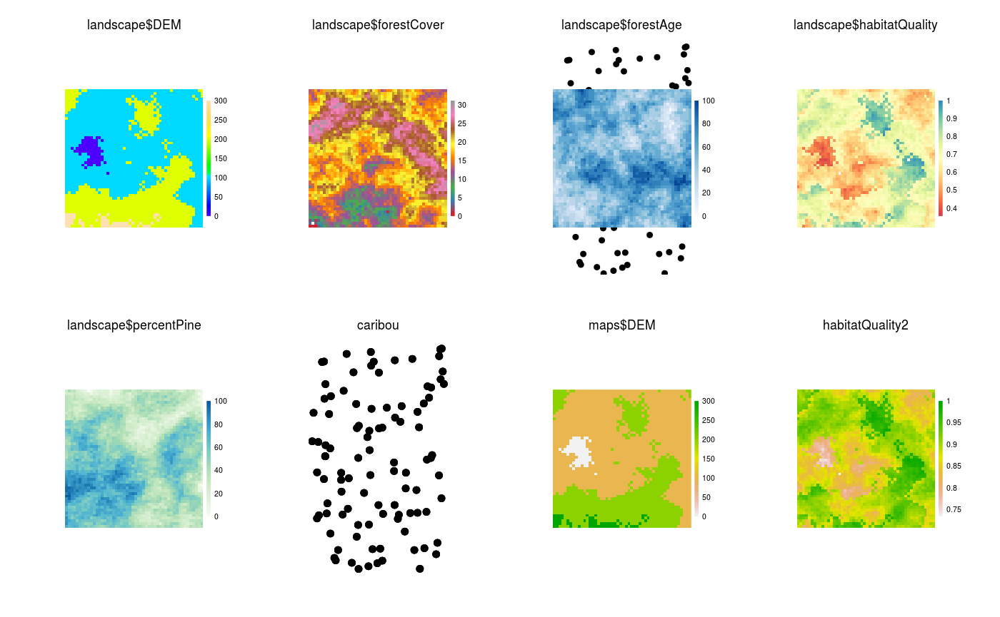
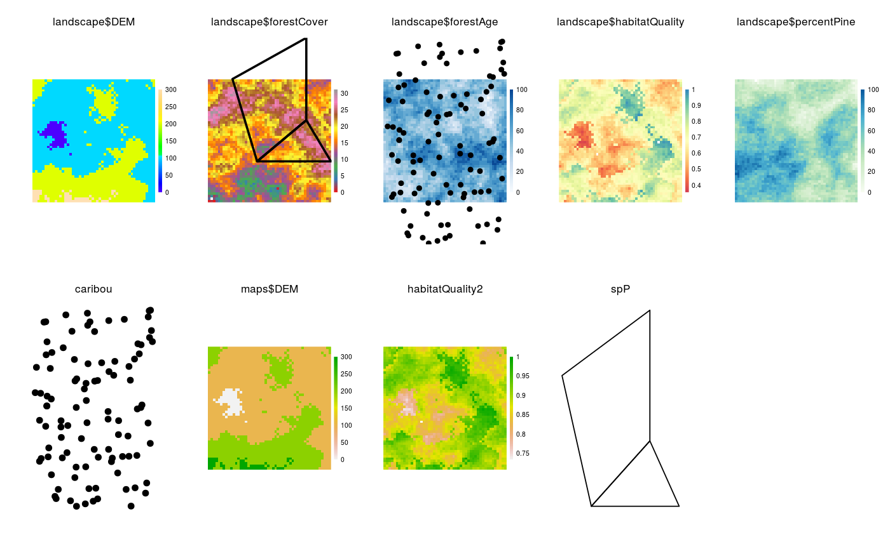
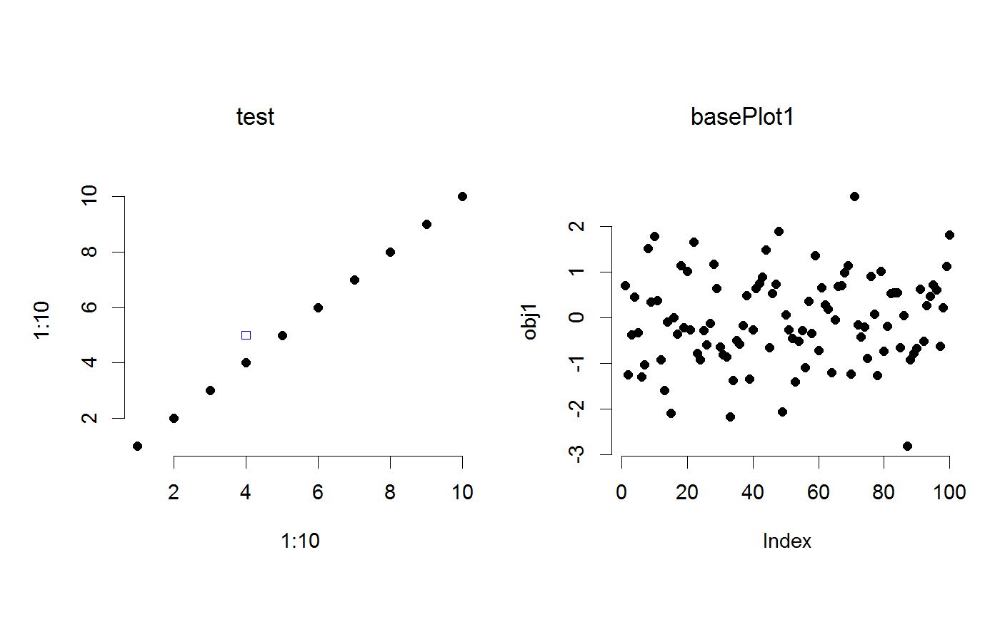

Plot: Fast, optimally arranged, multipanel plotting
This can take objects of type Raster*, SpatialPoints*,
SpatialPolygons*, and any combination of those.
These can be provided as individual objects, or a named list.
If a named list, the names either represent a different original object in the
calling environment and that will be used, or if the names don't exist in the
calling environment, then they will be copied to .quickPlotEnv for reuse later.
It can also handle ggplot2 objects or base::histogram objects
created via call to exHist <- hist(1:10, plot = FALSE). It can also take
arguments as if it were a call to plot. In this latter
case, the user should be explicit about naming the plot area using addTo.
Customization of the ggplot2 elements can be done as a normal
ggplot2 plot, then added with Plot(ggplotObject).
Re-plot to a specific device
Plot(..., new = FALSE, addTo = NULL, gp = gpar(), gpText = gpar(), gpAxis = gpar(), axes = FALSE, speedup = 1, size = 5, cols = NULL, col = NULL, zoomExtent = NULL, visualSqueeze = NULL, legend = TRUE, legendRange = NULL, legendText = NULL, pch = 19, title = TRUE, na.color = "#FFFFFF00", zero.color = NULL, length = NULL, arr = NULL, plotFn = "plot") # S4 method for ANY Plot(..., new = FALSE, addTo = NULL, gp = gpar(), gpText = gpar(), gpAxis = gpar(), axes = FALSE, speedup = 1, size = 5, cols = NULL, col = NULL, zoomExtent = NULL, visualSqueeze = NULL, legend = TRUE, legendRange = NULL, legendText = NULL, pch = 19, title = TRUE, na.color = "#FFFFFF00", zero.color = NULL, length = NULL, arr = NULL, plotFn = "plot") rePlot(toDev = dev.cur(), fromDev = dev.cur(), clearFirst = TRUE, ...)
Arguments
| ... | A combination of |
|---|---|
| new | Logical. If |
| addTo | Character vector, with same length as |
| gp | A |
| gpText | A |
| gpAxis | A |
| axes | Logical or |
| speedup | Numeric. The factor by which the number of pixels is divided by to plot rasters. See Details. |
| size | Numeric. The size, in points, for |
| cols | (also |
| col | (also |
| zoomExtent | An |
| visualSqueeze | Numeric. The proportion of the white space to be used for plots. Default is 0.75. |
| legend | Logical indicating whether a legend should be drawn.
Default is |
| legendRange | Numeric vector giving values that, representing the lower
and upper bounds of a legend (i.e., |
| legendText | Character vector of legend value labels.
Defaults to |
| pch | see |
| title | Logical or character string. If logical, it
indicates whether to print the object name as the title
above the plot. If a character string, it will print this
above the plot. NOTE: the object name is used with |
| na.color | Character string indicating the color for |
| zero.color | Character string indicating the color for zero values, when zero is the minimum value, otherwise, zero is treated as any other color. Default transparent. |
| length | Numeric. Optional length, in inches, of the arrow head. |
| arr | A vector of length 2 indicating a desired arrangement of plot areas indicating number of rows, number of columns. Default NULL, meaning let Plot function do it automatically. |
| plotFn | An optional function name to do the plotting internally, e.g., "barplot" to get a barplot() call. Default "plot". |
| toDev | Numeric. Which device should the new rePlot be plotted to. Default is current device. |
| fromDev | Numeric. Which device should the replot information be taken from. Default is current device |
| clearFirst | Logical. Should |
Value
Invisibly returns the .quickPlot class object.
If this is assigned to an object, say obj, then this can be plotted
again with Plot(obj).
This object is also stored in the locked .quickPlotEnv, so can simply be
replotted with rePlot() or on a new device with rePlot(n),
where n is the new device number.
Details
NOTE: Plot uses the grid package; therefore, it is NOT compatible
with base R graphics. Also, because it does not by default wipe the plotting device
before plotting, a call to clearPlot is helpful to resolve
many errors. Careful use of the other device tools, such as dev.off() and
dev.list() might also clear problems that may arise.
If new = TRUE, a new plot will be generated, but only in the figure region that
has the same name as the object being plotted.
This is different than calling clearPlot(); Plot(Object),
i.e,. directly before creating a new Plot. clearPlot() will clear the entire
plotting device.
When new = FALSE, any plot that already exists will be overplotted,
while plots that have not already been plotted will be added.
This function rearranges the plotting device to maximize the size of all the
plots, minimizing white space.
If using the RStudio IDE, it is recommended to make and use a new device
with dev(), because the built in device is not made for rapid redrawing.
The function is based on the grid package.
Each panel in the multipanel plot must have a name.
This name is used to overplot, rearrange the plots, or overlay using
addTo when necessary.
If the ... are named spatialObjects, then Plot will use
these names. However, this name will not persist when there is a future call
to Plot that forces a rearrangement of the plots.
A more stable way is to use the object names directly, and any layer names
(in the case of RasterLayer or RasterStack objects).
If plotting a RasterLayer and the layer name is "layer" or the same as the
object name, then, for simplicity, only the object name will be used.
In other words, only enough information is used to uniquely identify the plot.
Because of modularity, Plot must have access to the original objects that were
plotted. These objects will be used if a subsequent Plot event forces a
rearrangement of the Plot device. Rather than saving all the plot information
(including the data) at each Plot
call (this is generally too much data to constantly make copies),
the function saves a pointer to the original R object. If the plot needs
to be rearranged because of a future addition, then Plot will search for that
original object that created the first plots, and replot them. This has several
consequences. First, that object must still exist and in the same environment.
Second, if that object has changed between the first time it is plot and any
subsequent time it is replotted (via a forced rearrangement), then it will take
the object *as it exists*, not as it existed. Third, if passing a named list
of objects, Plot will either create a link to objects with those names in the
calling environment (e.g., .GlobalEnv) or, if they do not exist, then Plot
will make a copy in the hidden .quickPlotEnv for later reuse.
cols is a vector of colours that can be understood directly, or by
colorRampePalette, such as c("orange", "blue"), will give a
colour range from orange to blue, interploated.
If a list, it will be used, in order, for each item to be plotted.
It will be recycled if it is shorter than the objects to be plotted.
Note that when this approach to setting colours is used, any overplotting
will revert to the colortable slot of the object, or the default
for rasters, which is terrain.color()
cols can also accept RColorBrewer colors by keyword if it is
character vector of length 1. i.e., this cannot be used to set many objects by keyword in
the same Plot call. Default terrain.color(). See Details.
Some coloring will be automatic. If the object being plotted is a Raster, then
this will take the colorTable slot (can be changed via setColors() or other ways).
If this is a SpatialPointsDataFrame, this function will use a column called colors
and apply these to the symbols.
Silently, one hidden object is made, .quickPlot in the
.quickPlotEnv environment, which is used for arranging plots in the
device window, and identifying the objects to be replotted if rearranging
is required, subsequent to a new = FALSE additional plot.
This function is optimized to allow modular Plotting. This means that several
behaviours will appear unusual.
For instance, if a first call to Plot is made, the legend will reflect
the current color scheme. If a second or subsequent call to Plot is
made with the same object but with different colours (e.g., with cols),
the legend will not update. This behaviour is made with the decision that the
original layer takes precedence and all subsequent plots to that same frame
are overplots only.
speedup is not a precise number because it is faster to plot an
non-resampled raster if the new resampling is close to the original number of
pixels.
At the moment, for rasters, this is set to 1/3 of the original pixels.
In other words, speedup will not do anything if the factor for
speeding up is not high enough (i.e., >3). If no sub-sampling is desired,
use a speedup value less than 0.1.
These gp* parameters will specify plot parameters that are available
with gpar(). gp will adjust plot parameters, gpText
will adjust title and legend text, gpAxis will adjust the axes.
size adjusts point size in a SpatialPoints object.
These will persist with the original Plot call for each individual object.
Multiple entries can be used, but they must be named list elements and they
must match the ... items to plot.
This is true for a RasterStack also, i.e., the list of named elements
must be the same length as the number of layers being plotted.
The naming convention used is: RasterStackName$layerName, i.e,
landscape$DEM.
See also
clearPlot, gpar, raster,
par, SpatialPolygons, grid.polyline,
ggplot, dev
Examples
======= clearPlot()library(sp) library(raster) library(RColorBrewer) library(rgdal) files <- dir(system.file("maps", package = "quickPlot"), full.names = TRUE, pattern = "tif") maps <- lapply(files, raster) names(maps) <- lapply(maps, names) # put layers into a single stack for convenience landscape <- stack(maps$DEM, maps$forestCover, maps$forestAge, maps$habitatQuality, maps$percentPine) # can change color palette setColors(landscape, n = 50) <- list(DEM = topo.colors(50), forestCover = brewer.pal(9, "Set1"), forestAge = brewer.pal("Blues", n = 8), habitatQuality = brewer.pal(9, "Spectral"), percentPine = brewer.pal("GnBu", n = 8)) # Make a new raster derived from a previous one; must give it a unique name habitatQuality2 <- landscape$habitatQuality ^ 0.3 names(habitatQuality2) <- "habitatQuality2" # make a SpatialPoints object caribou <- sp::SpatialPoints(coords = cbind(x = stats::runif(1e2, -50, 50), y = stats::runif(1e2, -50, 50))) # use factor raster to give legends as character strings ras <- raster(extent(0, 3, 0, 4), vals = sample(1:4, size = 12, replace = TRUE), res = 1) # needs to have a data.frame with ID as first column - see ?raster::ratify levels(ras) <- data.frame(ID = 1:4, Name = paste0("Level", 1:4)) Plot(ras, new = TRUE)# Arbitrary values for factors, including zero and not all levels represented in raster levs <- c(0:5, 7:12) ras <- raster(extent(0, 3, 0, 2), vals = c(1, 1, 3, 5, 8, 9), res = 1) levels(ras) <- data.frame(ID = levs, Name = LETTERS[c(1:3, 8:16)]) Plot(ras, new = TRUE)# Arbitrary values for factors, including zero and not all levels represented in raster levs <- c(0:5, 7:23) ras <- raster(extent(0, 3, 0, 2), vals = c(1, 1, 3, 5, 8, 9), res = 1) levels(ras) <- data.frame(ID = levs, Name = LETTERS[1:23]) Plot(ras, new = TRUE)# SpatialPolygons sr1 <- sp::Polygon(cbind(c(2, 4, 4, 1, 2), c(2, 3, 5, 4, 2)) * 20 - 50) sr2 <- sp::Polygon(cbind(c(5, 4, 2, 5), c(2, 3, 2, 2)) * 20 - 50) srs1 <- sp::Polygons(list(sr1), "s1") srs2 <- sp::Polygons(list(sr2), "s2") spP <- sp::SpatialPolygons(list(srs1, srs2), 1:2) clearPlot()Plot(ras)Plot(landscape)# Can overplot, using addTo Plot(caribou, addTo = "landscape$forestAge", size = 4, axes = FALSE)# can add a plot to the plotting window Plot(caribou, new = FALSE)# Can add two maps with same name, if one is in a stack; they are given # unique names based on object name Plot(landscape, caribou, maps$DEM)# can mix stacks, rasters, SpatialPoint* Plot(landscape, habitatQuality2, caribou)# can mix stacks, rasters, SpatialPoint*, and SpatialPolygons* <<<<<<< HEAD Plot(landscape, caribou)Plot(habitatQuality2, new = FALSE)Plot(spP)# provide arrangement, NumRow, NumCol Plot(spP, arr = c(1, 4), new = TRUE)# example base plot clearPlot()Plot(1:10, 1:10, addTo = "test", new = TRUE) # if there is no "test" then it will make itPlot(4, 5, pch = 22, col = "blue", addTo = "test")obj1 <- rnorm(1e2) Plot(obj1, axes = "L")======= Plot(landscape, caribou)Plot(habitatQuality2, new = FALSE)Plot(spP)# provide arrangement, NumRow, NumCol Plot(spP, arr = c(1, 4), new = TRUE)# example base plot clearPlot()Plot(1:10, 1:10, addTo = "test", new = TRUE) # if there is no "test" then it will make itPlot(4, 5, pch = 22, col = "blue", addTo = "test")obj1 <- rnorm(1e2) Plot(obj1, axes = "L")>>>>>>> development # Can plot named lists of objects (but not base objects yet) ras1 <- ras2 <- ras a <- list() for (i in 1:2) { a[[paste0("ras", i)]] <- get(paste0("ras", i)) } a$spP <- spP <<<<<<< HEAD clearPlot()Plot(a)# clean up clearPlot()